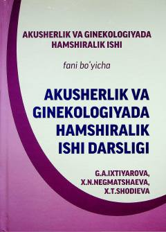

AVAkusherlik va ginekologiyada hamshiralik parvarishi bo'yicha oliy ta'lim uchun mo'ljallangan o'quv qo'llanma.
Ushbu darslik oliy hamshiralik ishi yo'nalishi talabalari uchun mo'ljallangan bo'lib, akusherlik va ginekologik yordamni tashkil etish, fiziologik homiladorlik hamda patologik holatlarda hamshiralik parvarishi masalalarini qamrab oladi. Kitobda zamonaviy klinik yondashuvlar, shoshilinch holatlarda ko'rsatiladigan yordam algoritmlari va amaliy ko'nikmalar batafsil yoritilgan.